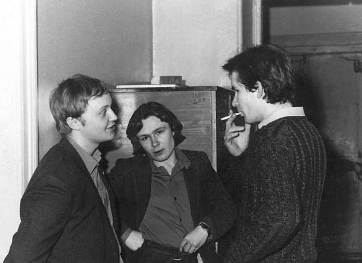
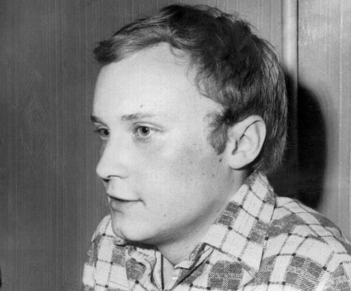
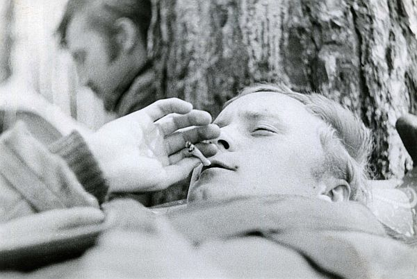
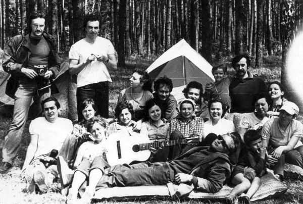
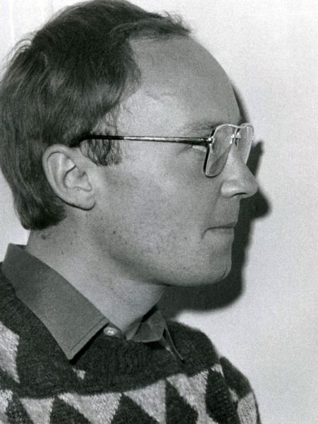
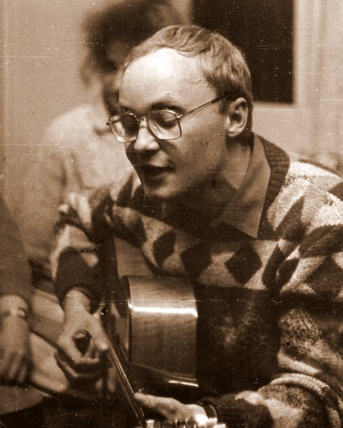
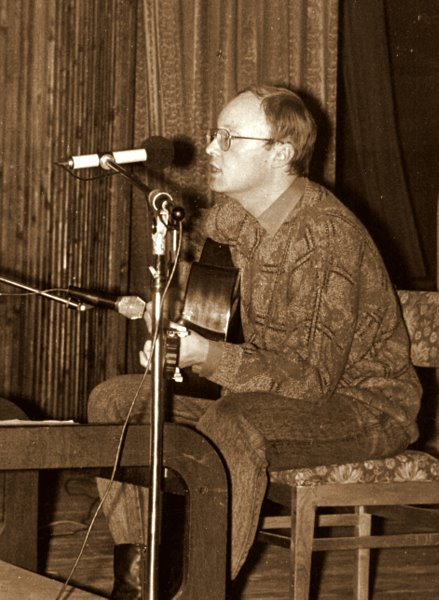

| Работы М.Н.Щербакова и Алексея Кузнецова. Снято в Калужском КСП |
|---|
| В кулуарах - приблизительно 1982 г.  Слева - Михаил Константиновия, справа - Михаил Николаевич |
|  |
| На Протвинском слёте, год 82-й.
 |
|  |
| В Калужском КСП  |
|  |
| На сцене в Доме Учителя  |